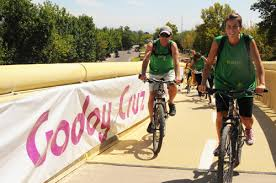

El uso de la bicicleta brinda muchos beneficios personales y colectivos, debido a que promueve la práctica de ejercicio, el cuidado de la salud, la convivencia familiar y cuida el medio ambiente. La Secretaría de Salud realiza una Cruzada Nacional por el Uso de la Bici, con el objetivo de generar bienestar físico, evitar la contaminación y el tráfico vehicular.


 6
6